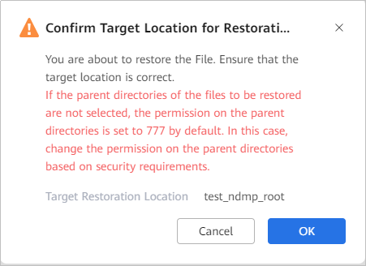

This section describes how to restore specified files in an NDMP NAS file system or file directory (that has been backed up) to their original location, new locations, or local locations.
Context
- The OceanProtect supports file-level restoration using backup copies and object storage archive copies.
- To query the compatibility of file systems that support indexes, you can log in to the OceanProtect Compatibility Query tool.
Precautions
If a folder or file name contains garbled characters, file-level restoration is not supported. Do not select folders or files of this type. Otherwise, file-level restoration fails.
Prerequisites
- File-level restoration is supported only when the index status of a copy is Indexed.
- If Automatic Indexing is enabled for the copy, the index status of the copy is Indexed. In this case, you can directly perform file-level restoration. If the Automatic Indexing is not enabled, click Manually Create Index and then perform file-level restoration.
- To restore an NDMP NAS file system or file directory to a new location, a storage device residing at the new location needs to be added to the OceanProtect. For details about how to add a storage device, see Step 1: Adding a Storage Device.
Procedure
- Choose Explore > Copy Data > File Systems > NDMP.
- Search for copies by resource or copy. This section describes how to search for copies by resource.
On the Resources tab page, find the file system or file directory to be restored based on the name and click the name.
- On the Copy Data page, select the year, month, and day in sequence to locate the copy.
If
 is displayed below a month or day, a copy is generated in the month or day.
is displayed below a month or day, a copy is generated in the month or day. - In the row of the copy for restoration, choose More > File-level Restoration.

Linked files do not support file-level restoration.
- Set File Obtaining Mode, which can be Select file paths from the directory tree or Enter file paths.
- For OceanProtect E1000, if there are more than 10,000 files in the selected directory, the system may time out, preventing you from selecting files or folders to be restored from the directory. In this case, you are advised to manually enter paths. For other models of this product, if there are more than one million files in the selected directory, the system may time out, preventing you from selecting files or folders to be restored from the directory. In this case, you are advised to manually enter paths.
- When entering a file path, enter a complete file path, for example, /opt/abc/efg.txt or C:\abc\efg.txt. If you enter a folder path, for example, /opt/abc or C:\abc, all files in the folder are restored. The file name in the path is case sensitive.
- Select the object to be restored and the restoration target location.
Data can be restored to the original location or new location.
- Original location: Restores data to the original file system.
- New location: Restores data to a file system of another device or another file system of the original device.
For details about the parameters of the original location, see Table 1. For details about the parameters of a new location, see Table 2.
Table 1 Parameters for restoring data to the original location Parameter
Description
Location
Location of a file system, which cannot be modified.
Clients
By default, the built-in client is selected. If an external client exists, you can also select the external client.
Table 2 Parameters for restoring data to a new location Parameter
Description
Storage Device
Select the storage device that resides at a new location.
File System
Select the file system to be restored.
FQDN/IP
Domain name or service IP address for accessing a NAS share.
NOTE:If you need to enter an FQDN, configure the DNS service on the management page of the OceanProtect so that the OceanProtect can access external domain names. For details about how to configure the DNS service, see Configuring the DNS Service.
Clients
By default, the built-in client is selected. If an external client exists, you can also select the external client.
Overwrite Rule
Replace existing files.
NOTE:If you do not select the parent directory and select only child content when selecting a copy, the permission on the parent directory is set to 777 by default after the restoration. Change the permission on the parent directory based on security requirements.
- Set parameters under Select Target Restoration Location and click OK.
- Click OK.
